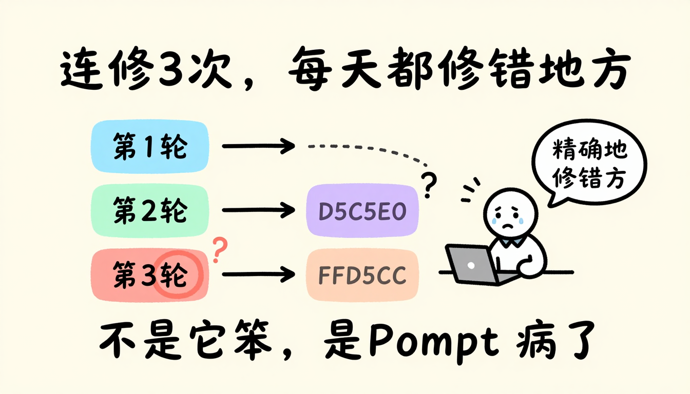
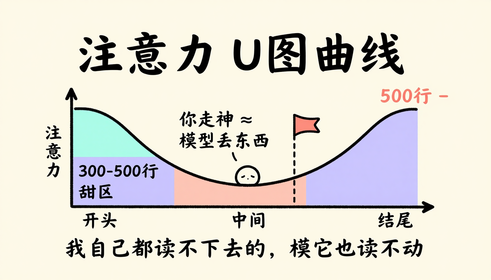
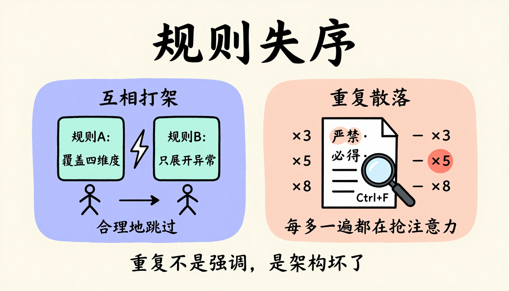
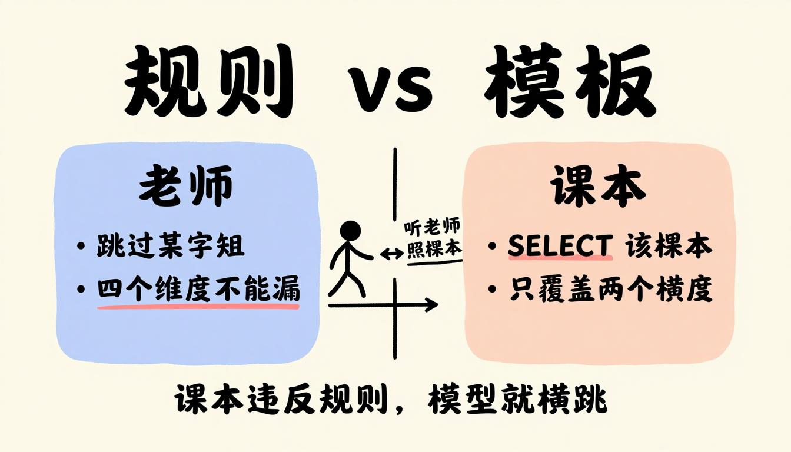
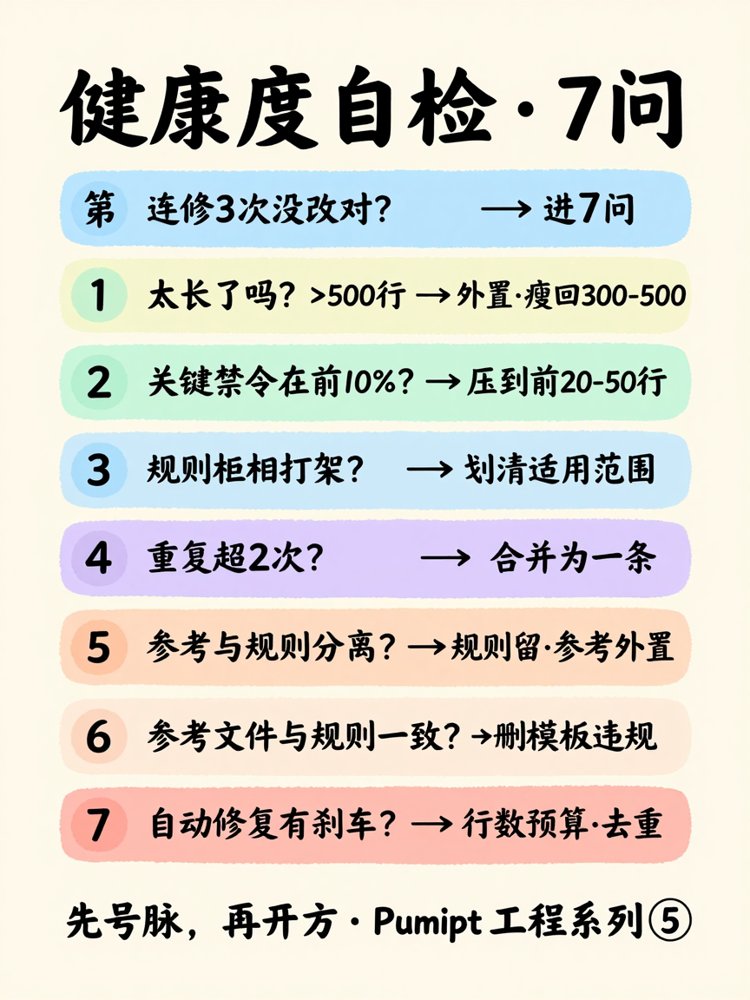

① 点右上角「复制到公众号」 → ② 微信公众号编辑器 Ctrl/⌘+V 粘贴。若图片未带入，改用 Ctrl/⌘+A 全选本页正文再复制；仍不行就用同目录「_含图_自包含.html」。
📦 3 Parts + Conclusion
👉 滑动
PART 01
先把脉 7 问
自检清单
PART 02
承认一件事
表达不等于遵循
PART ///
轮到你了
号脉再开方
导读｜你的 Prompt 越加越长，AI 越来越不听话，你以为加的规则还不够，其实是你连它哪儿病了都说不清。这篇给你一份 7 问自检清单，问完就知道该不该重构、哪儿出了问题、怎么治。建议先收藏，下次想加规则前翻出来走一遍。
说句实话，很长一段时间里，我有个特别顺手的肌肉记忆：AI 一出错，我就加一条规则。漏了字段，加一条；多输出了内容，加一条；工具选错，再加一条。我以为自己在解决问题，其实只是在往一份越来越长的文档里堆砖头。
直到前阵子，一个客户的后台项目，把我这套肌肉记忆彻底打碎了。
那次前后端协同，我有一份反复用的 DEV 提示词，专门让 AI 按接口文档生成对接代码。有个接口的入参校验反复出问题，AI 漏了一种边界情况，某个字段为空时该怎么处理，它没管。
第一轮，我以为是规则没写清，加了条：必须覆盖所有边界入参。第二轮，它换一种边界漏，我又加：用枚举把边界列全。第三轮，枚举倒是列了，可枚举值跟实际业务对不上，凭空多出几个根本不存在的状态。
连修三次，每次都精确地修错地方。它不是没改，是改得不在点上。那一刻真有点想摔键盘。
盯着第三次那个凭空冒出来的枚举值，我突然反应过来一件事：
AI 连修 3 次都没修对，不是它笨，是我的 Prompt 病了。

更要命的是，我连它哪儿病了都说不清楚。不知道它算不算太长，不知道是规则互相打架还是重复太多，更不知道该重构还是继续加规则。每次出问题就加一条，越加越乱，却说不清乱在哪。
那种感觉怎么说呢？就像你明知家里那根老水管该换了，可一想到要砸墙刨地，就宁可拿个桶接着，将就一天是一天。
后来我把这事琢磨透了才明白：我缺的不是规则，是一份给自己 Prompt 把脉的清单。今天这篇，就把这份清单给你，7 个问题问完，你就知道你的 Prompt 该不该重构、哪儿出了问题、怎么治。
01
PART
先别动手改，先问自己 7 个问题
SELF-CHECK · 7 QUESTIONS
我把这套叫 Prompt 的健康度自检，7 个问题，每个都能当场开出方子。不过在你数这 7 个问题之前，先卡一道前置关，我叫它第 0 问：它是入口信号，不查病，只负责告诉你什么时候该停下来把脉。卡过这一关，再进后面 7 问做诊断。
AI 是不是连修 3 次都没 get 到点？
这是我踩出来的信号。同一个问题让 AI 修 3 次以上，每次都精确地修错地方，没忘规则、没报错，就是改不到点上。一旦出现这个，别再加规则了，这份 Prompt 病了，停下来进下面 7 问。
为什么是 3 次？一两次没改对很正常，可能是你没说清。但连着 3 次都修不到点上，就不是表达问题，是这份 Prompt 自己的结构出了毛病，再加规则只会让它更乱。
✦ 小技巧
我现在的习惯是，同一个问题让 AI 修到第 3 次还没改对，就强制自己停手，先去走一遍下面的 7 问，而不是接着加第 4 条规则。
它太长了吗？
判断长不长，我有两把尺子。
第一把看行数，过 500 我心里就咯噔一下。第二把更土，但也更准：从头读一遍，读到哪儿你开始走神、想跳着看，那个位置大概就是模型也会读不动的地方。
我自己都读不下去的，模型肯定也读不动。
这不是鸡汤，背后是注意力的 U 形曲线，开头和结尾它最上心，中间最容易丢。你读到中间走神，模型在中间也在丢东西，位置差不多对得上。

开方｜分层加外置。规则类内容留下，参考类的，像表结构、SQL 模板、报告格式，拎出去做成引用文件，需要时让模型自己查。把 Prompt 瘦回 300 到 500 行的甜区，注意力预算留给真正的行为约束。
我自己有一份反复用的 PRD 提示词，从上千行压到 300 多行，最关键的几条禁令遵循率反而上来了。不是规则变多了，是每条规则终于有足够的注意力被读懂。
要是外置还不够，得重新搭分层架构，这个我在《把 1500 行 Prompt 砍到 300 行——Agent Skill 的分层重构法》里专门拆过，照着来就行。
最关键的禁令，在前 10% 吗？
闭眼想一下你这份 Prompt，你最先记住的是哪条。如果最先记住的不是最不可违反的那条，就是位置错了。
开方｜把所有带严禁、必须、不得的句子全拎出来，集中压到最前面 20 到 50 行，后面的正文一律删掉重复，需要时引用一下就行。别小看这一步，光把禁令集中到开头，最关键规则的遵循率就会立刻上来。
✦ 小技巧
拎禁令的时候，按违反了会出事的严重程度排，最严重的压在第一行，模型读到的第一眼就是最硬的铁律。
这一步其实是分层重构的第一层，轻症你自己做，重症照着《把 1500 行 Prompt 砍到 300 行——Agent Skill 的分层重构法》重新分层。
有没有互相打架的规则？
这一问专治那种你百思不得其解的错。怎么找？跑一遍最近的 badcase，重点找那种它没忘规则、也没报错，却按某条规则合理地做错了的。
每一次这种合理地做错背后，基本都藏着一对互相打架的规则。
拿我自己踩过的坑说：一边写着分析必须覆盖四个维度，一边又写只对有异常的维度展开。某个维度长期稳定在 99.9%，模型就有了合理的跳过理由。它不是忘了第一条规则，是被第二条合理地带偏了。
它不是不听话，是被另一条规则合理地带偏了。
开方｜给打架的两条规则明确各自的适用范围。比如改成，总览表必须包含四个维度的全部指标行，无论是否异常；维度下钻只对异常维度展开，但总览表不受此规则影响。把模型合理推理出错误行为的空间堵死。
想更彻底地消歧，把模糊规则改写成正向指令，这个我在《别对 AI 说不要——正向指令为什么比否定指令更管用》里讲过。
同一条规则，重复超过 2 次了吗？
打开你的 Prompt，Ctrl+F 搜一下严禁、必须、不得、不能这些词。看两个数：一是总数，二是同一个意思出现了几次。
✦ 小技巧
搜的时候连同同义说法一起搜，严禁、不得、不能、不要，否则会漏掉那些换了个说法的重复规则。
如果同一条规则，比如严禁遗漏某个字段，散在文档里出现 3 次以上，还是不同说法，那不是你强调得够，是架构坏了。你每多写一遍，都在抢别的规则的注意力配额。
重复不是强调，是架构坏了。

开方｜合并成一条，放在第一层，全文只此一处，别的地方一律删掉。重复超 2 次说明架构有问题，得回去重新分层，还是转《把 1500 行 Prompt 砍到 300 行——Agent Skill 的分层重构法》。
参考内容和规则，分开了吗？
表结构、SQL 模板、报告格式，这些是参考类内容，需要时查阅的，不是行为约束。它们要是和规则混在一起，Prompt 就会膨胀，因为你会忍不住把所有东西都塞进去。
原则｜规则类内容，就是行为约束，留在 Prompt 里；参考类内容，需要时查阅的知识，外置成引用文件。这样 Prompt 保持在甜区，注意力预算留给真正重要的行为约束。
参考文件和规则，一致吗？
这一问最容易被忽略，也最容易翻车。光把参考内容外置还不够，你还得检查这文件本身有没有在教模型犯错。
我精简 Skill 后做过一次审计，发现一个特别隐蔽的问题：规则说输出时跳过某类字段，可 SQL 模板里几十处都在 SELECT 这些字段；规则要求四个维度都不能遗漏，模板示例却只覆盖了其中两个。模型一边读规则，一边照着模板写，两个信号矛盾，结果就是时灵时不灵。这种矛盾我自己查了半天才注意到，那一刻真有点后背发凉。
开方｜模板里彻底删掉被规则禁止的内容，注释掉也不行，注释也是 token，模型照样读；模板示例必须完整覆盖规则要求的所有维度，不给部分覆盖的坏示范；关键格式差异放到显眼的对照表里，别让细节藏在角落。
一句话｜参考文件就是模型的课本。课本违反了规则，模型就会在听老师的话和照课本做之间反复横跳。

自动修复，有刹车吗？
前面 6 问都是你手动能查的，最后这一问，专门留给用工具自动改 Prompt的人。如果你发现 badcase 就喂给工具让它自动改，这一问必查。看看你的自动修复，是不是每次都生成一段新规则追加到文档里，而不通读全局、不改已有、不分析根因。
开方｜如果是，那它就是台膨胀机器，迟早把你的 Prompt 喂成几千行。怎么给它加刹车，行数预算、语义去重、单次追加上限、定期压缩，这个坑我下篇专门拆，这里先记住一句话：没刹车的自动修复，比手动加规则更危险。

👇 7 问自检清单 · 长按图片保存，随时自查
02
PART
别急着加规则，先承认一件事
FACE THE TRUTH
7 问走完，你大概已经知道自己 Prompt 哪儿病了。但在动手治之前，我想跟你聊一个更底层的事。
为什么我们第一反应永远是加一条规则，而不是先诊断？我以前也这样，后来想明白了：其实就图一个省事。
加规则这个动作，太有掌控感了。你敲下一条严禁，心里踏实了，觉得自己解决问题了。可你仔细想想，你做的只是表达了一条规则，不是让这条规则真正生效。换句话说，你写下来了，不等于它被听见了。
我们心里有个默认：只要我把规则说出来，AI 就该识别、该照做。这个默认把表达规则和规则被遵循，悄悄划了等号。
但前面 7 问已经告诉你：你说出来的，未必被听到；被听到的，未必被遵循；被遵循的，未必没跟别的规则打架。
表达不等于遵循，中间隔着注意力、位置、冲突三层损耗。
这三层损耗背后的机制，注意力的 U 形曲线、规则的静默择一、否定指令的粉红大象效应，我在《你越强调 AI 越不听话——Prompt 工程里的恶性循环》里讲过，这里只说结论。
所以加规则让人觉得省事，是因为它给了你解决问题的错觉，而不是它真解决了问题。你确实做了一件事，但那件事只是表达，不是生效。
自检，就是逼你承认一件事：你以为说了的，可能根本没被听到。 这就是我想递给你的那个心智拐弯：从加规则的反应式，到先诊断的诊断式。不是更累，是第一次真的在解决问题。
///
LAST
轮到你了
YOUR TURN
这份 7 问清单，我建议你直接截图存下来。下次你的 Prompt 又出问题，别急着加规则，先拿出来走一遍。
第 0 问先卡住自己：是不是连修 3 次都没改对？是，就停下，进 7 问。
轻症的，禁令位置不对、参考内容没分离，当场就能开方改掉。重症的，架构问题去翻《把 1500 行 Prompt 砍到 300 行——Agent Skill 的分层重构法》，指令歧义去翻《别对 AI 说不要——正向指令为什么比否定指令更管用》，自动化的坑等我下篇。
说句实话，我自己从加规则改成先诊断，最大的变化不是 Prompt 变短了，是终于不用每次出问题都抓瞎了。以前是哪疼贴哪，现在是先号脉再开方。
你的 Prompt 现在多少行？最关键的禁令在前 10% 吗？拿这 7 问去号一号，欢迎在评论区告诉我你查出哪儿病了。
写到这里，如果你也有一份越加越长的 Prompt，不妨现在就翻出来，用这 7 问号一号脉。
我是 {{作者名}}，热衷于把 Prompt 工程的踩坑经验，拆成你能直接照做的清单。
觉得这篇有用，随手点赞、在看、转发三连。
星标⭐「AI启蒙学习」，Prompt 工程系列更新中，下一篇拆《自动化的膨胀陷阱》，别错过。
THANKS FOR READING